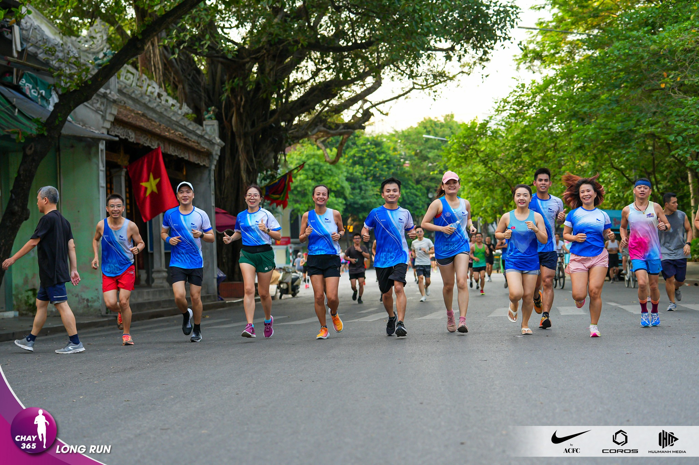

Cách để chạy bộ đỡ nhàm chán hơn
Viết vào ngày June 8, 2023
bởi HTMT
Trong khi luyện tập cho những cuộc đua đường dài 42km, 21km, 15km, và thậm chí 10km có bao giờ bạn cảm thấy uể oải, mong chạy cho xong để về nhà? Có bao giờ bạn nghĩ đến bỏ cuộc giữa chừng mặc dù còn sức kết thúc bài tập?
Một điều mà các vận động viên chạy đường dài phải đối phó là sự nhàm chán, mất hứng thú chạy bộ. Sau đây là những mẹo vặt mà tôi lượm lặt được xin chia sẻ với các bạn nếu sau này bạn có lần bị rơi vào trường hợp chán chường thì hãy nghĩ đến nó.
- Chạy Nhanh Hơn: Bạn không cần chạy nước rút vì làm vậy thì bài tập sẽ kết thúc vì mình bị đuối trước khi hoàn tất. Chỉ cần chạy nhanh hơn tốc độ đang chạy, vô hình chung cả thể xác và tinh thần của bạn bị thử thách không còn đầu óc mà nghĩ đến chuyện chán chường
- Nghe Nhạc: Điều này thì không phải bàn cãi nữa, âm nhạc làm thăng hoa đời sống con người, do đó nó có thể làm mình quên đi mệt nhọc và chán chường trong lúc chạy bộ. Nhớ chọn những bài nhạc hùng tráng một chút thay vì mấy bài nhạc rên rỉ ru mình ngủ. Riêng cá nhân tôi thích nghe nhạc với nhịp điệu gần 180 beats trong một phút và ráng nhịp bước chân của mình theo điệu nhạc
- Đếm Bước Chân: Nếu không có máy nghe nhạc thì bạn có thể đếm bước chân để tính “cadence”. Canh đồng hồ trong vòng một phút thì một chân bước được bao nhiêu lần, rồi sau đó nhân đôi để tính tổng cộng bước chân. Thí dụ như chân trái bước được 80 lần trong một phút thì cadence của bạn là 160. Con số cadence lý tưởng là 180 bước một phút.
- Tìm Bạn Đồng Hành Nói Nhiều: Chạy một mình dễ đâm ra nhàm chán nên đôi khi bạn cũng nên kiếm người chạy chung, nếu người đó nói nhiều thì càng tốt. Đề tài nói chuyện thì ôi thôi bao la, từ chính trị, tôn giáo, đến những chuyện tình cảm lứa đôi tha hồ mà 8, bạn sẽ ngạc nhiên là hành trình chạy bộ chấm dứt lúc nào không hay. 
- Ghi Danh Chạy Thi: Không cần biết 5K hay Marathon, cứ việc ghi danh. Một khi sẽ ra chạy thi thì bạn phải luyện tập có mục tiêu, và chính vì muốn chạy tốt ở cuộc thi bạn sẽ tập trung quên đi nhàm chán. Luyện tập để chạy thi khác với chạy cho vui vì bạn muốn kết thúc cự ly được đặt ra trong bài tập ngày hôm đó.
- Tranh Đua Với Dân Chạy Bộ Không Quen Biết: Không nhất thiết đợi đến ngày chạy đua mình mới tranh đua được, khi bạn tập chạy ở một cung đường nào đó, nếu thấy có người chạy đằng trước hãy ráng bắt kịp họ, hoặc đang ở trong phòng gym, ráng chạy tốc độ nhanh hơn người đang chạy kế bên bạn. Tranh đua sẽ làm tan biến sự nhàm chán.
- Đổi Vòng Chạy: Thay vì chạy theo chiều kim đồng hồ hãy đổi ngược lại hôm nay chạy ngược chiều kim đồng hồ. Cảnh vật vẫn vậy nhưng nhìn ở một góc độ khác biết đâu bớt nhàm chán hơn! Thay vì chạy trên con đường quen thuộc hãy đổi sang cung đường khác hoặc kiếm những “trail” trong rừng để chạy chắc chắn sẽ thú vị rất nhiều.
- Biến Tốc: Chạy liên tục ở một tốc độ đều rất dễ bị nhàm chán. Tại sao không trộn lẫn các bài tập Intervals? Thí dụ như sau khi chạy 10 phút khởi động (warm up), bắt đầu một phút nhanh, một phút chậm và lập đi lập lại 10 đến 20 phút. Cuối cùng chạy thư giãn (cool down). Làm như vậy thì đầu óc bạn phải tập trung vào các mốc thời gian, không dễ gì bị nhàm chán.
- Nghĩ đến bia trong lúc chạy. Ra chạy mục tiêu 10 que và mục tiêu nữa là sau 10 que sẽ đi ún beer với đồng nhậu. Rứa là phóng cái vèo thật nhanh để đi ún beer. Chả bao giờ chán.
- Nghị về NYC 🤣 - chắc chạy nỏ biết mệt là chi - hế hế.
- Tìm 1 nữ xênh đẹp chạy cùng; Nữ: Tìm 1 hốt boy hộ tống. Thì chạy sáng đến tối cũng đc
- Mua sắm phụ kiện chạy bộ mới thường xuyên. Khi bạn đầu tư 1 chiếc đồng hồ, 1 đôi giày hay bộ quần áo phục vụ chạy bộ thì bạn không thể để chúng nằm im ở nhà. Bạn sẽ bị thôi thúc sử dụng chúng, test thử xem như thế nào, có phù hợp với mình không. Trải nghiệm trên những phụ kiện mới chắc chắn sẽ làm bạn cố gắng ra chân sớm nhất có thể. Tin tôi đi. Tôi nói vậy nhưng chưa làm được như vậy. Hãy để chuyên gia Trần Đức Công minh hoạ cho cả nhà điều này để chúng ta biết mua và pass đồ như thế nào mới là nghệ thuật 🥰.
- Suy nghĩ về nội dung sẽ đăng phê tê búc để khoe sau khi chạy, bằng cách này bộ não của bạn sẽ bị lừa vào hướng phải tìm ra câu trự nào cho hay ho, hài hước khi đăng phây, trong chốc lát là não bộ của bạn sẽ bị đánh lạc hướng và vượt qua cơn chán.

Hi vọng 13 bí kíp chống chán trên sẽ giúp bạn đỡ/ bớt chán trong những bước chạy đường dài đầy thử thách về sự kiên nhẫn.
Chúc các bạn chạy đều đặn và không bị nhàm chán!
Nguồn: sưu tầm, góp nhặt, và tổng hợp từ nhiều nguồn.
#HTMT
#HaTinhMarathonTeam